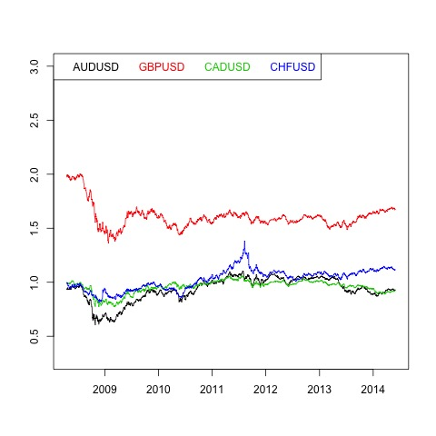
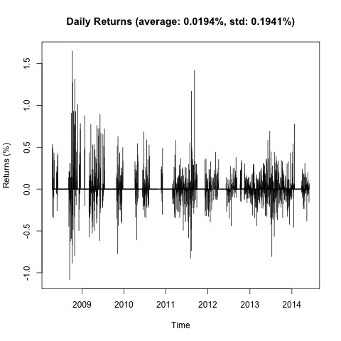
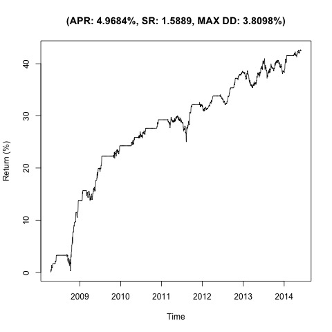
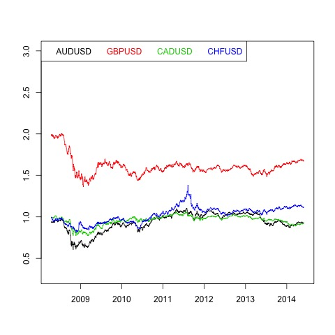
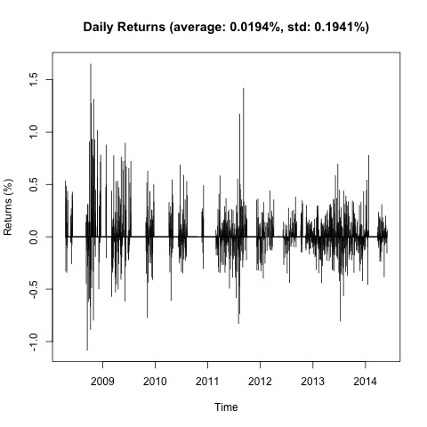
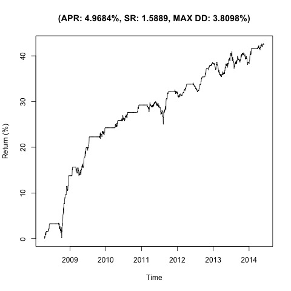

Johansen-Procedure 4.81 7.52 9.24 12.97 12.17 17.85 19.96 24.6 25.46 32 34.91 41.07 55.44 49.65 53.12 60.16 1 1 1 1 1 -0.01 1.96 -0.66 0.29 -0.21 -1.46 -1.37 4.32 -1.35 -1.12 -0.41 -1.15 -2.71 0.57 0.74 0.89 -1.54 -1.23 -0.73 -0.04
Augmented Dickey-Fuller Test p-value 0.01

 




